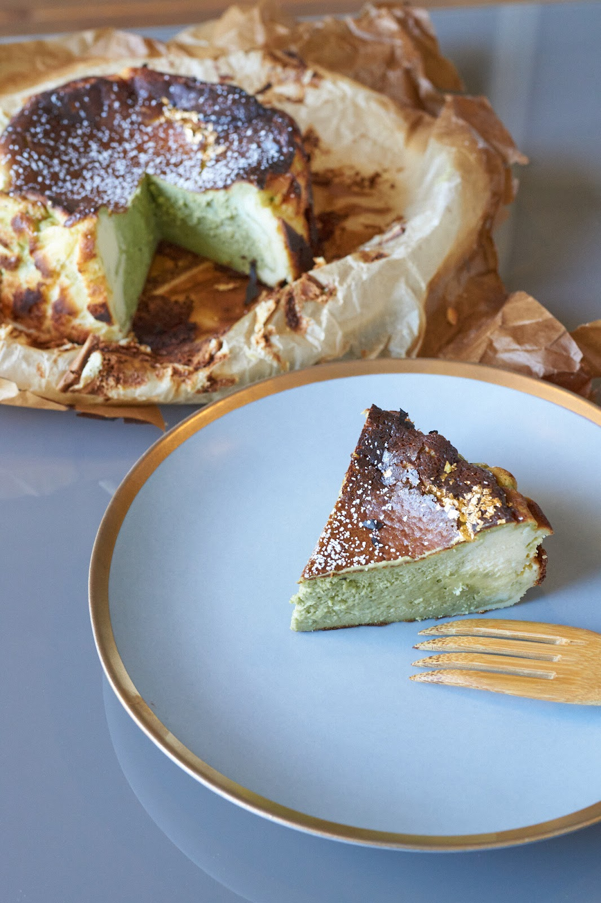
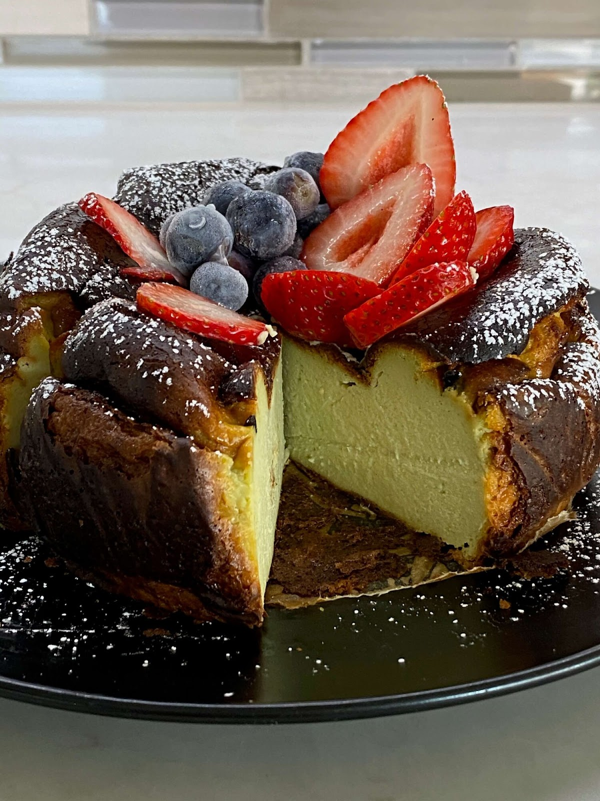
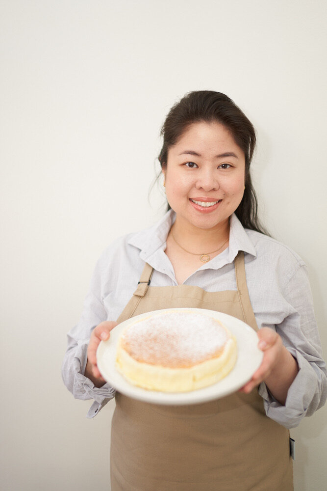

Matcha Basque Cheesecake Recipe by Kat Lieu

Hi friends! Have you made a matcha cheesecake before? How about a matcha Basque cheesecake? It’s a burnt
caramelized cheesecake, with a light green tea flavor, that’s sure to wow any taster. It’s super creamy, smooth,
and so easy to make too! Matcha powder is grounded up powder of specially-grown green tea leaves. Matcha has so
many health benefits: “Matcha is high in a catechin called EGCG (epigallocatechin gallate), which is believed to
have cancer-fighting effects on the body. Studies have linked green tea to a variety of health benefits, like
helping to prevent heart disease, type 2 diabetes and cancer, and even encouraging weight loss.”-time.com
Matcha Burnt Basque Cheesecake Recipe
This beautiful 6-inch matcha Basque cheesecake will have a caramelized top and a deliciously soft cheesecake
interior. Taste it when it's still warm, or have it with a cup of tea or coffee after refrigerating the cake for
at least four hours. The beauty of this crust-less cake is how asymmetric, burnt, imperfect it is. Your cake
will be tall, and sure to delight your tastebuds!
INGREDIENTS
- 2 bars of cream cheese (450g)
- 1/2 cup (104g) fine sugar
- 3 large eggs
- 2 tbsp (15g) cornstarch (skip if you want a less jelly-like cake)
- 1 cup (240ml) heavy cream (cow's milk works too. Coconut milk and soy milk also work!)
- 2 1/2 tbsp (20g) flour (any works, really. I used gluten-free flour Bob's Red Mill)
- 1 tbsp (7.38g) matcha powder (ceremonial is best, although more expensive) mixed with 3 tbsp water into a
paste.
- Optional: 1 tbsp butter, a splash of vanilla extract, and a pinch of salt Optional fruits for topping, and
powdered sugar
INSTRUCTIONS
- Preheat oven 240C or 460F. In a pot over low heat, place the cream cheese and optional butter. Stir and
allow cheese to soften into a thick cream, with no clumps. Add the sugar and stir. Remove from heat when you
have a smooth, creamy mixture. Add the eggs, one at a time, and mix well.
- Add the flour and cornstarch and mix until smooth, mixing out any clumps. You will not have to strain this
batter. Add the milk or cream. Mix well. You can at this point add a splash of vanilla extract and a pinch
of salt. Finally, add the matcha paste and stir well.
- A 6-inch springform pan is best. Place a sheet of parchment paper inside the pan, running your fingers over
the inside of the rim and the bottoms to dress the pan. Leaver about an inch or two of parchment paper
standing tall. Crinkles are fine.
- Pour the batter into the pan and it should fill almost to the top. Smooth out the batter on top with a whisk
and bake for 30-35 minutes. The top should have a beautiful burnt brown layer, which is a Basque
cheesecake's signature look. The middle should be jiggly. Don't worry, it's fully cooked. Cool in room
temperature before refrigerating for at least 4 hours or overnight. Cut the cake and serve at room
temperature. Great with a cup of coffee or tea!
Note
Using this base cheesecake recipe, you can substitute the matcha powder with any food powder like pink pitaya,
black sesame, purple sweet potato, or red beet powder to make it any flavor or color you’d like! For Valentine’s
Day, I made a beautiful ombre pink pitaya basque cheesecake! To make an ube version, sub the matcha powder with
1 to 2 teaspoons ube extract, or 1 to 2 tablespoons ube halaya plus some extract for the coloring.
Airfrying
To air fry the Basque cheesecake, place the pan into the air fryer basket and bake for 10 to 15 minutes at 400 F
and then 10 more minutes at 350F.

About the Baker
Kat Lieu is the founder of Subtle Asian Baking and this website modernasianbaking.com, and she is the author of
Modern Asian Baking at Home. Currently, Kat is a
full-time author and recipe developer. Follow her on
instagram
and check out her blog Phil and Mama.
